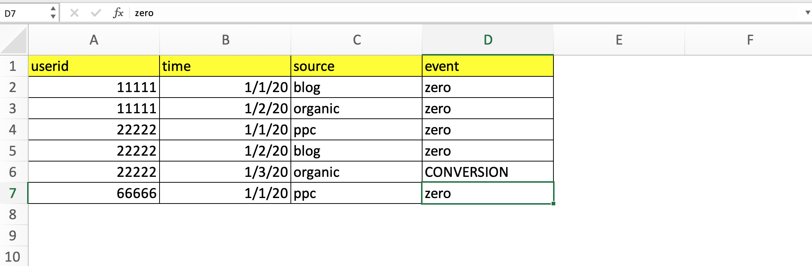
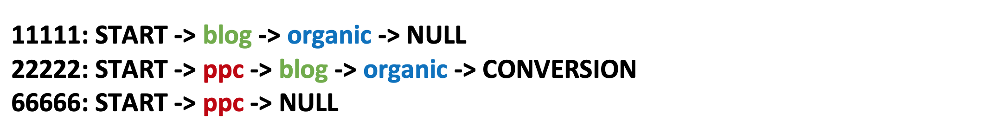
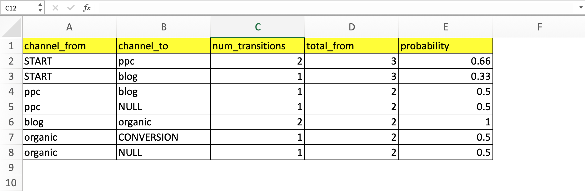
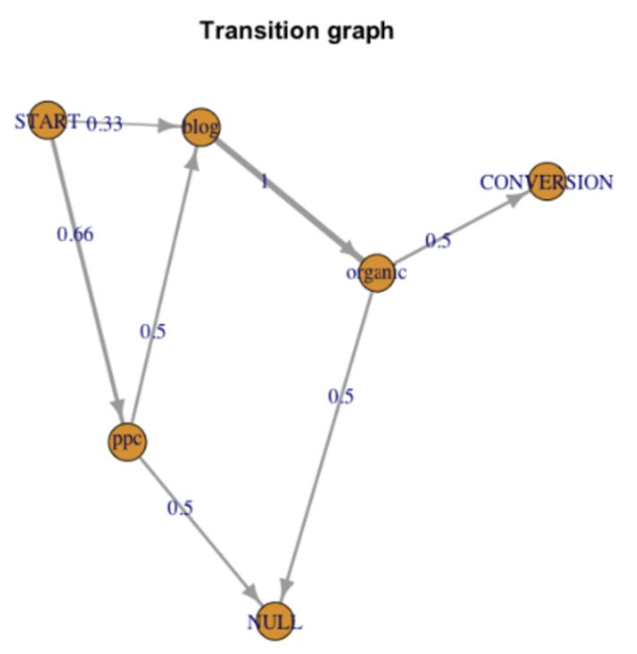

Markov Chain Attribution Model.
April 10, 2020
An article by Sergey Matrosov
Accurate attribution is crucial for marketing and business. And today we will implement the Markov Chain attribution model, using python, to evaluate the contribution of channels’ performance to overall marketing activities.
Markov Chain is a sequence of random events with a finite or countable number of outcomes, characterized by the next postulate: if the present is fixed, the future is independent of the past. The following is an example of Markov Process: imagine that your next step depends on the result of coin flipping. Heads - you move forward. Tails - you move back.
1. You flip a coin, you get heads, step forward.
2. Your next step depends on present flipping. So, the future step is independent of the past (Step 1).
Terminology:
• Model of Attribution - a rule or a set of rules defining principles of value distribution between channels on the way to a conversion.
• Channel - a condition of a Markov Chain at one moment in time; in the case of marketing channels, it is the same as the transition from an email, paid advertisement or a blog page view.
• Target Action - according to a task it can be a conversion to a registration, an activity or a first payment.
• Event List - a table where all the user’s channels are sorted by time and target action.
Here is a full code, where you can also find the table that contains value distribution between three channels (organic, blog, ppc) for three users (this table will be shared via GitHub):
Our table looks like this:

Let’s import pandas and get this table from our excel file to start working with it:
import pandas as pd
user_streaming = pd.read_excel("YOUR_PATH_TO\\WebsiteUserStreaming.xlsx", header=2)
user_streaming
1) Firstly, we need to check if there are any conversions. If there are no conversions, there is nothing to attribute.
conversions = user_streaming['event'][user_streaming['event'] == 'CONVERSION'].count()
if(conversions == 0):
print('Nothing to count, wait for at least 1 conversion')
2) Next, we need to build a chain of all channels visited for each user, according to the time the user visited the correspondent channel (it’s based on the Event List). For users who were not converted, we add a NULL value. We also add a “START” channel for every user. As a result, we have the following transition chains for users:

chains = []
for i, userid in enumerate(user_streaming['userid']):
if (i == 0):
user_path = user_streaming[user_streaming['userid'] == userid]
chain = 'START'
for path in user_path['source']:
chain += '-' + path
chain += '-' + user_path['event'].iloc[-1]
chains.append(chain)
prev_user = userid
else:
if(userid == prev_user):
continue;
else:
user_path = user_streaming[user_streaming['userid'] == userid]
chain = 'START'
for path in user_path['source']:
chain += '-' + path
chain += '-' + user_path['event'].iloc[-1]
chains.append(chain)
prev_user = userid
3) Then we transform transition chains into a transition matrix. The matrix defines the probability of a transition from one channel to another, from the START channel to the second channel and from the second channel to NULL or CONVERSION. The Scheme is below:
chains_transitions = []
for chain in chains:
transitions = chain.split('-')
for cur, nxt in zip (transitions, transitions[1:] ):
chains_transitions.append(cur+'-'+nxt)
chains_transitions.sort()
channels_from = []
channels_to = []
num_transitions = []
total_from = []
for i, chain in enumerate(chains_transitions):
num = chains_transitions.count(chain)
num_transitions.append(num)
channel_from = chain[:chain.index('-')]
channels_from.append(channel_from)
channel_to = chain[chain.index('-')+1:]
channels_to.append(channel_to)
for channel in channels_from:
total_from.append(channels_from.count(channel))
transition_matrix = pd.DataFrame(list(zip(channels_from, channels_to, num_transitions, total_from)),
columns =['channels_from', 'channels_to', 'num_transitions', 'total_from'])
transition_matrix.drop_duplicates(subset=None, keep='first', inplace=True)
transition_matrix['probability'] = round(transition_matrix['num_transitions']/transition_matrix['total_from'], 2)
transition_matrix['from-to'] = transition_matrix['channels_from'] + '-' + transition_matrix['channels_to']
The chains are exposed in transition breakdowns (START -> organic”, “blog -> ppc”) and we count their frequency (column num_transitions). Then we count the sum of transitions from each channel in channel_from (column total_channel). According to these two values we have the probability of a transition from one channel to another (column probability).

The easiest way of showing the transition matrix is using a graph, or so-called probabilistic graphical model. The graph’s tops are channels and the graph’s edges are probabilities of transitions. In our example, the graph looks as follows:

4) Once we have the transition matrix, we can evaluate the probability of conversion in our user journey. This probability is a sum of all the possible chains that have occurred in a conversion. A chain’s probability is defined as the product of the transition probabilities that are taken from the transition matrix.
Usually, there are many chain variants. For example, if 2 channels, A and B and transitions a -> b and b -> a have NOT NULL probabilities, we can consider the next chains:

etc.
So, the probability is:
Prob = Prob(C1) + Prob(C2) + Prob(C3) + Prob(C4) + Prob(C5) + Prob(C6) + ...
If a chain is longer, then the probability is lower, because the chain’s probability is a product of factors >= 1 and the model’s probability (Prob_model) becomes stable.
According to our example on the graph we can only see two successful chains:
• seq1: START > ppc > blog > organic > CONVERSION
• seq2: START > blog > organic > CONVERSION
def rec_seq(keyword, string, channel_list, end='-CONVERSION'):
successful_channels = transition_matrix['channels_from'].loc[transition_matrix['channels_to'].isin([keyword])]
for channel in successful_channels:
if(channel == 'START'):
for i in reversed(channel_list):
string += '-' + i
new_string = string + end
successful_chains.append(new_string)
string = 'START'
else:
channel_list.append(channel)
rec_seq(channel, string, channel_list)
start = 'START'
channel_list = []
successful_chains = []
success = 'CONVERSION'
rec_seq(success, start, channel_list)
• Prob = Prob(seq1) + Prob(seq2)
• Prob = 0.66 * 0.5 * 1 * 0.5 + 0.33 * 1 * 0.5
• Prob = 0.16 + 0.16 = 0.33
model_probability = []
for sequence in successful_chains:
seq_probability = []
for chain in transition_matrix['from-to']:
if(sequence.__contains__(chain)):
value = transition_matrix['probability'].loc[transition_matrix['from-to'].isin([chain])]
value = value.values.tolist()
value = value[0]
seq_probability.append(value)
else:
continue
print(seq_probability)
result = 1
for prob in seq_probability:
result = result * prob
model_probability.append(result)
print(model_probability)
result = 0
for prob in model_probability:
result = result + prob
model_probability = result
5) Once we have found the model’s probability, we have to find a coefficient of a channel’s normalization (removal effect).
This means we must learn how the model’s probability decreases (in %) if we exclude the channel. To do so, we have to count the probability of the chain (user path to conversion) to convert our user without a specific channel (exclude all the chains with this channel) and divide the common model’s probability. This can also be done by excluding the channel element at the top of a graph.
In our example, the coefficients of a channel’s normalization are as follows:
• RE_ppc = Prob(seq2) / Prob(model) = 0.16 / 0.33 = 0.5
• RE_blog = 1
• RE_organic = 1
re_model_probability = []
re_sources = {}
sources = list(user_streaming['source'].drop_duplicates(inplace=False))
for source in sources:
re_sources[source] = 0
involve = 0
for sequence in successful_chains:
if (sequence.__contains__(source)):
involve += 1
if(involve == len(successful_chains)):
re_sources[source] = 1
continue
else:
seq_probability = []
for chain in transition_matrix['from-to']:
if(sequence.__contains__(chain)):
value = transition_matrix['probability'].loc[transition_matrix['from-to'].isin([chain])]
value = value.values.tolist()
value = value[0]
seq_probability.append(value)
else:
continue
result = 1
for prob in seq_probability:
result = result * prob
re_model_probability.append(result)
if (re_sources[source] == 1):
continue
else:
result = 0
for prob in re_model_probability:
result = result + prob
re_model_probability = result
re_sources[source] = round(re_model_probability/model_probability, 2)
re_sources
In this case a coefficient of a channel’s normalization for organic and blog equal 1, because without those channels there would be no chains, which could be finished with a conversion.
6) The last step is to count conversions by channels. For this, a coefficient of the channel’s normalization is divided by the sum of all the coefficients of a channel’s normalization, then multiplied by the sum of all the conversions. So, the distribution looks as follows:
1. Num_cnv(ppc) = 0.5 / (0.5 + 1 + 1) * 1 = 0.2
2. Num_cnv(organic) = 1 / (0.5 + 1 + 1) * 1 = 0.4
3. Num_cnv(blog) = 1 / (0.5 + 1 + 1) * 1 = 0.4
num_cnv = {}
for source, coef_norm in re_sources.items():
coef_sum = 0
for values in re_sources.values():
coef_sum += values
num_cnv[source] = round(float(coef_norm/coef_sum*conversions), 2)
num_cnv
table_for_report = pd.DataFrame(num_cnv, index=[0])
Advantages of a model
This is a much fairer assessment of every channel’s contribution when compared to traditional models; this can be explained by the fact that evaluation is based on successful and non-successful channels.
Disadvantages of a model
The model is not additive; this means that if we are going to transform (or divide) one channel within two channels (subchannels or a separation), for example, blog -> blog_article1 + blog_article2, we will see that the sum of the conversions of the blog as a channel, differs from blog_article1 + blog_article2 as a channel.
Additional information
1. One problem of adding new channels in an attribution model. An attribution model should be viewed as a benefit distribution scheme; by adding new channels, the old data becomes invalid and less relevant; this characterizes every attribution model.
2. Problems of subchannel distinguishing.The first problem is that the model (as it is shown as being higher) is not additive, so a sum of conversions by subchannels will not be the same as in a channel.
The second problem is that we are going to distinguish channels on a greater number of subchannels. We will ensure that every channel’s coefficient of normalization reaches 0, so that all the subchannels will have approximately the same number of conversions.